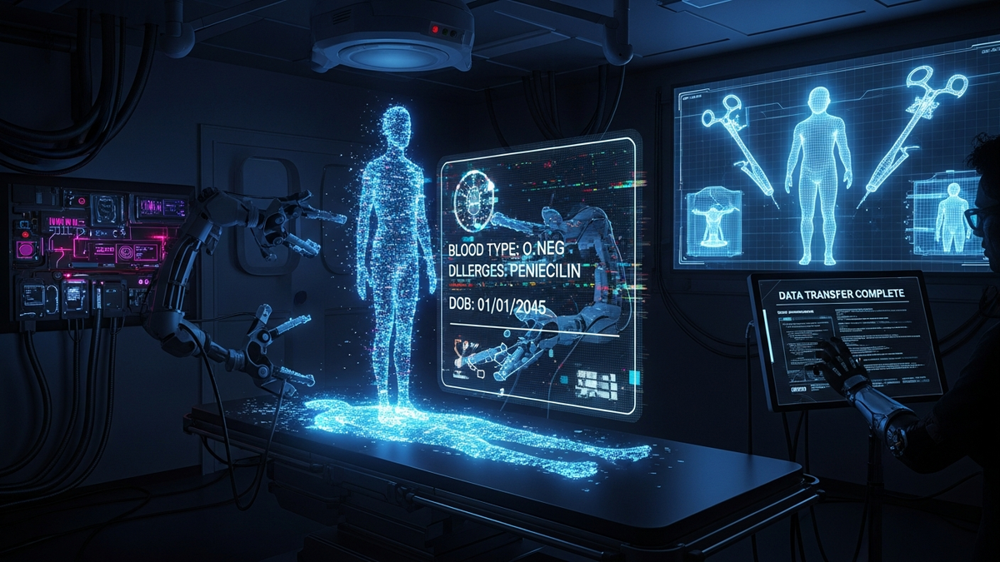

In an era where personal data is often described as the new oil, its theft carries increasingly dire and personal consequences. While credit card fraud and bank account breaches are widely understood threats, a more insidious and potentially life-altering form of identity theft lurks in the shadows: medical identity theft. This sophisticated crime goes beyond mere financial loss; it invades the very core of your health and well-being. Imagine discovering that a stranger has undergone a complex surgical procedure, received expensive medications, or even had a serious diagnosis attributed to your medical history – all without your knowledge or consent, and all billed to your insurance or government healthcare program. This isn't a plot from a dystopian novel; it's a stark reality for thousands of victims each year, as scammers leverage stolen personal and medical data not just for quick cash, but to obtain free, often life-saving, or elective surgical interventions at your expense. The ramifications extend far beyond a simple billing error, compromising your financial stability, corrupting your sensitive medical records, and potentially jeopardizing your future healthcare. Understanding the mechanics of this complex fraud is the first critical step toward protecting yourself from becoming an unwitting benefactor to a scammer's illicit medical treatments.
Medical identity theft is a multifaceted crime that begins with the illicit acquisition of a victim's personal and health information. Unlike typical financial identity theft, which primarily targets bank accounts or credit cards, medical identity theft requires a broader and deeper trove of data. Scammers are after a comprehensive profile that includes not only an individual's full name, date of birth, and Social Security Number (SSN), but also their insurance policy numbers, group numbers, medical record numbers, and potentially even their specific diagnoses, treatment histories, and prescription details. This rich tapestry of information is far more valuable on the black market than a simple credit card number, precisely because it unlocks access to a system designed to provide essential, often high-cost, services: healthcare.
The methods of data acquisition are varied and constantly evolving, mirroring the digital landscape. One of the most common vectors is large-scale data breaches affecting healthcare providers, insurance companies, or third-party billing services. These breaches, often the result of sophisticated cyberattacks, can expose millions of patient records simultaneously, dumping vast quantities of sensitive data onto the dark web. Phishing scams remain a prevalent threat, where victims are tricked into revealing their information through deceptive emails, text messages, or phone calls masquerading as legitimate entities like their insurance provider or doctor's office. These messages often create a false sense of urgency, prompting individuals to click malicious links or provide details over the phone, unwittingly handing over the keys to their medical identity. Insider threats also play a significant role; disgruntled employees or those bribed by criminal organizations can steal patient data directly from secure systems. Physical theft, though less common in the digital age, still occurs through stolen wallets, discarded medical documents, or even burglaries targeting healthcare facilities. Additionally, some scammers resort to "dumpster diving" for discarded medical bills or explanation of benefits (EOB) statements, piecing together fragments of information to construct a usable identity.
Once acquired, this data transforms into a valuable commodity, traded in clandestine online marketplaces. The price of a full medical identity, complete with insurance details, can far exceed that of a stolen credit card number. This elevated value is due to the potential for significant financial gain through fraudulent billing, prescription fraud, and crucially, the acquisition of expensive medical services like surgery. Scammers may use this data to create entirely new, fraudulent medical records linked to the victim's insurance, or they might simply alter existing records to facilitate their schemes. They meticulously cross-reference different data points to ensure the stolen identity appears legitimate, often combining information from multiple sources to create a robust, believable persona. This meticulous preparation is what allows them to confidently approach healthcare providers, armed with enough verifiable details to bypass initial security checks. The sheer volume of data involved in some breaches means that hundreds of thousands, if not millions, of individuals become potential targets, often remaining unaware until the fraudulent activity has already taken place, leaving them to grapple with the profound and often devastating aftermath.
The ultimate goal for many medical identity thieves, particularly those involved in more sophisticated schemes, is to leverage the stolen data to obtain medical services, often culminating in costly procedures like surgery. This "grand deception" involves a meticulous process of impersonation, where the scammer assumes the victim's identity to gain access to healthcare facilities and receive treatments they are not entitled to. The scammer's ability to present themselves convincingly is paramount, and they often arm themselves with enough verifiable information to navigate the initial layers of identity verification at clinics, hospitals, and pharmacies.
The process often begins with smaller, less conspicuous acts of fraud to test the stolen identity's viability. This might involve obtaining prescription drugs, scheduling routine doctor's appointments, or undergoing diagnostic tests. Each successful interaction builds confidence and provides additional data points that can be used to further solidify the impersonation. When it comes to securing a surgical procedure, the stakes are significantly higher, demanding a more elaborate and sustained deception. A scammer might present symptoms consistent with a condition requiring surgery, attend multiple consultations, and meticulously follow pre-operative instructions, all while using the victim's name, date of birth, and insurance information. They might even use fake identification documents that bear their own photo but the victim's details, though this is a riskier approach given the increasing use of biometric verification in some healthcare settings. The sheer volume of patients and the often-overburdened nature of healthcare systems can inadvertently create vulnerabilities that scammers exploit, as staff may rely heavily on the provided insurance card and basic demographic information.
The types of surgeries sought by scammers can vary widely. While some might pursue necessary medical treatments for themselves or an uninsured family member, others may target elective or cosmetic procedures, knowing that the victim's insurance will bear the astronomical cost. For instance, a scammer might feign a debilitating back injury to secure spinal surgery, or fabricate symptoms of a chronic condition to justify a complex cardiac procedure. In some cases, organized crime syndicates might facilitate these "free surgeries" as part of a larger fraudulent billing scheme, where the procedures themselves might be legitimate but are performed on individuals using stolen identities, with the intent of defrauding insurance companies or government programs like Medicare or Medicaid. The scammer benefits from the physical treatment, while the criminal syndicate profits from the fraudulent billing. The financial burden is then shifted onto the victim's insurance provider, and ultimately, onto the victim themselves through erroneous bills, damaged credit, and compromised medical records. Healthcare providers, despite their best efforts, can struggle to identify these imposters, particularly if the scammer has access to a comprehensive set of the victim's personal and medical data, making the impersonation alarmingly convincing and the deception incredibly difficult to detect until after the fact.
The immediate and long-term repercussions of medical identity theft are profoundly damaging, extending far beyond the financial realm to impact a victim's physical health, emotional well-being, and overall quality of life. When a scammer uses your identity to obtain medical services, especially high-cost procedures like surgery, the fallout can be catastrophic. The most visible consequence is often a deluge of medical bills for services never received. These bills, which can run into tens or even hundreds of thousands of dollars for complex surgeries, are typically sent to the victim, not the imposter. This can lead to immediate financial distress, as victims are left to dispute charges for treatments they never underwent, often facing aggressive collection agencies and a rapid decline in their credit score. Insurance policies can be maxed out or cancelled due to excessive claims, leaving the legitimate policyholder without coverage when they truly need it. Furthermore, the victim's deductible might be reset, or their premiums could skyrocket, creating an ongoing financial burden.
However, the financial impact is often overshadowed by the severe health consequences. When an imposter receives medical care under your name, their medical history becomes intertwined with yours. This means that diagnoses, treatments, allergies, and medications prescribed to the scammer are erroneously recorded in your personal medical file. Imagine going to the emergency room with a severe allergic reaction, only for doctors to consult your file and find no record of the allergy, or worse, a record indicating you are allergic to a life-saving medication. Such inaccuracies can lead to misdiagnoses, delayed appropriate treatment, or even life-threatening medical errors. For example, if a scammer undergoes surgery for a specific condition, that condition might be erroneously added to your record, potentially making it difficult for you to obtain future insurance coverage, qualify for certain jobs, or even receive accurate medical care for your actual health issues. Correcting these errors is an arduous, time-consuming, and emotionally draining process, often requiring extensive communication with multiple healthcare providers, insurance companies, and credit bureaus, with no guarantee of a swift resolution.
Protect your identity and browse privately with Surfshark One - the all-in-one security suite.
GET 60% OFF SURFSHARK NOWBeyond the tangible financial and health impacts, victims of medical identity theft often experience significant emotional and psychological distress. The violation of privacy, the feeling of being exposed and vulnerable, and the sheer frustration of navigating a complex bureaucratic nightmare to clear their name can take a heavy toll. Victims report feelings of helplessness, anger, and anxiety, as they struggle to regain control over their personal and medical narratives. The process of disputing fraudulent charges, correcting medical records, and dealing with potential legal ramifications can consume countless hours and lead to prolonged periods of stress. In some cases, victims may even be denied legitimate medical care because their insurance has been depleted or because their medical history now contains false information that makes them appear to have pre-existing conditions they do not have. This pervasive ripple effect underscores the unique severity of medical identity theft, distinguishing it as a crime that not only steals your money but also fundamentally compromises your health and peace of mind.
The lucrative nature of medical identity theft has not gone unnoticed by organized crime syndicates, transforming the illicit trade of stolen medical data into a sophisticated dark web economy. Unlike individual scammers operating in isolation, these syndicates possess the resources, expertise, and networks to execute large-scale, complex fraud operations, making them a formidable force in the medical identity theft landscape. On the dark web, stolen medical identities are bought and sold in specialized forums and marketplaces, often in bulk. A complete medical identity, including a patient's name, date of birth, Social Security Number, insurance policy details, and even medical history, commands a significantly higher price than a stolen credit card number. While a credit card might fetch a few dollars, a comprehensive medical profile can sell for hundreds, sometimes thousands, of dollars, reflecting its immense potential for long-term financial exploitation.
Organized crime groups are instrumental in both the acquisition and utilization of this data. They often employ teams of highly skilled hackers to orchestrate sophisticated cyberattacks against healthcare systems, insurance providers, and third-party vendors, leading to massive data breaches. These groups also establish elaborate phishing schemes, utilizing advanced social engineering tactics to trick individuals into divulging their sensitive information. Once the data is acquired, it is often laundered and packaged for sale or directly used by the syndicate for various fraudulent activities. This can include submitting false claims to insurance companies for services never rendered, known as "phantom billing," or operating "pill mills" where stolen identities are used to obtain controlled substances for illicit resale. In the context of "free surgery," organized crime might act as facilitators, connecting individuals seeking medical procedures without insurance or the ability to pay with stolen identities. They might even operate clinics or have corrupt insiders within healthcare facilities who are willing to perform procedures on imposters, then bill the victim's insurance, splitting the profits. These operations are often transnational, with data stolen in one country being used to commit fraud in another, making investigation and prosecution incredibly challenging.
The structure of these criminal enterprises is often hierarchical and highly specialized. There are those who specialize in data acquisition, others in data verification and packaging, and still others in the execution of the fraud itself, whether it's filing false claims, obtaining prescriptions, or orchestrating medical procedures. The dark web provides an anonymous and encrypted environment for these transactions and communications, making it difficult for law enforcement agencies to track and dismantle these networks. The involvement of organized crime elevates medical identity theft from a sporadic individual crime to a systematic threat that undermines the integrity of the entire healthcare system. It drains billions of dollars from insurance companies and government programs annually, ultimately leading to higher premiums for everyone and a greater financial burden on taxpayers. Furthermore, it perpetuates the cycle of victimizing innocent individuals, whose lives are thrown into chaos by the actions of these powerful and elusive criminal organizations, highlighting the urgent need for robust cybersecurity measures and international cooperation to combat this pervasive threat.
Protecting your medical identity in an increasingly digital and interconnected world requires a multi-layered approach, combining technological tools with vigilant personal habits. The proactive measures you take today can significantly reduce your risk of becoming a victim and mitigate the damage if your data is compromised. One of the most critical tools in your arsenal is an **Identity Theft Protection Service**. Companies like **LifeLock**, **IdentityForce**, or **Experian IdentityWorks** offer comprehensive monitoring that goes beyond just credit reports. They often include medical identity theft monitoring, which scans for unauthorized use of your medical ID numbers, alerts you to suspicious activity on your medical records, and provides assistance with recovery if you become a victim. These services can act as an early warning system, flagging unusual claims or changes to your medical profile before they escalate into major problems.
Beyond third-party services, regular personal vigilance is paramount. You should meticulously review every **Explanation of Benefits (EOB)** statement you receive from your insurance company. An EOB details the services billed to your insurance, the dates of service, the providers, and the amount your insurance paid. Look for any unfamiliar doctors, procedures, dates of service, or locations. Even a minor discrepancy, such as a bill for a routine check-up when you haven't visited the doctor, could be an early sign of medical identity theft. Request and review your full medical records annually from all your healthcare providers. The **Health Insurance Portability and Accountability Act (HIPAA)** grants you the right to access your medical records, and reviewing them can help you spot any erroneous entries, such as diagnoses or treatments you never received. Any discrepancies should be reported immediately to your provider and insurance company for investigation.
Securing your personal information offline and online is equally vital. Use strong, unique passwords for all your online accounts, especially those related to healthcare portals, and enable **multi-factor authentication (MFA)** wherever available. Be wary of unsolicited emails, text messages, or phone calls requesting sensitive personal or medical information; legitimate organizations rarely ask for such details via unsecure channels. If in doubt, always contact the organization directly using a verified phone number or website. Physically shred any discarded medical documents, old insurance cards, or bills before disposing of them. Consider placing a **fraud alert** or **credit freeze** with the major credit bureaus (**Equifax, Experian, TransUnion**) if you suspect your data has been compromised, as this can prevent imposters from opening new credit lines in your name, which often precedes medical identity theft attempts. Finally, educate yourself about common medical identity theft scams and stay informed about data breaches in the healthcare sector. By combining robust monitoring tools with proactive personal security measures, you can significantly fortify your defenses against the pervasive threat of medical identity theft and protect your sensitive health information from falling into the wrong hands.
The insidious nature of medical identity theft, particularly its use by scammers to obtain free surgery, underscores a critical vulnerability in our healthcare and data security systems. It is a crime that not only inflicts severe financial hardship but also profoundly compromises an individual's most personal asset: their health history. The journey from stolen data on the dark web to an imposter undergoing a major surgical procedure under your name is a complex and devastating one, leaving victims with erroneous medical records, crushing debt, and immense emotional distress. The involvement of organized crime further complicates the landscape, highlighting the sophisticated networks dedicated to exploiting these vulnerabilities for massive illicit gains. As digital infrastructures expand and healthcare data becomes ever more intertwined with our daily lives, the onus falls on both individuals and institutions to erect stronger defenses. Vigilance, proactive monitoring, and a comprehensive understanding of the threats are no longer optional but essential. By meticulously reviewing EOBs, leveraging advanced identity protection services, securing personal data, and demanding greater accountability from healthcare providers, we can collectively work to diminish the lucrative appeal of medical identity theft and protect ourselves from becoming unwilling benefactors to a scammer's illicit medical endeavors. The fight against this silent epidemic requires unwavering commitment to safeguard our identities and, by extension, our health and financial futures.
Don't wait for the headlines. Our Private Telegram Channel delivers real-time AI security updates and digital wealth strategies before they go viral. Stay protected. Stay ahead.
⚡ JOIN THE 1% NOWNo sign-up required. Instantly check risks, analyze AI text, or calculate your digital finances.